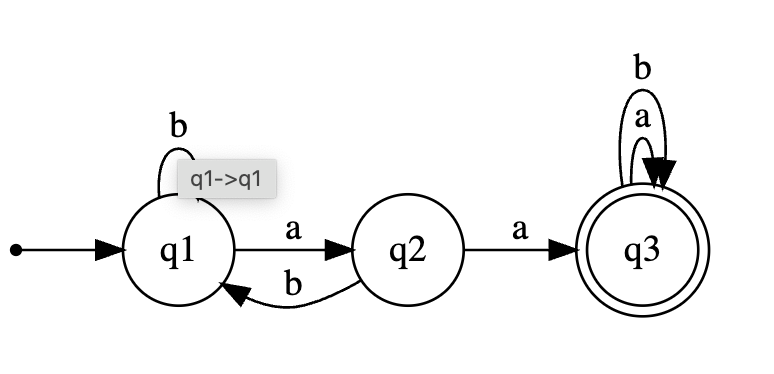
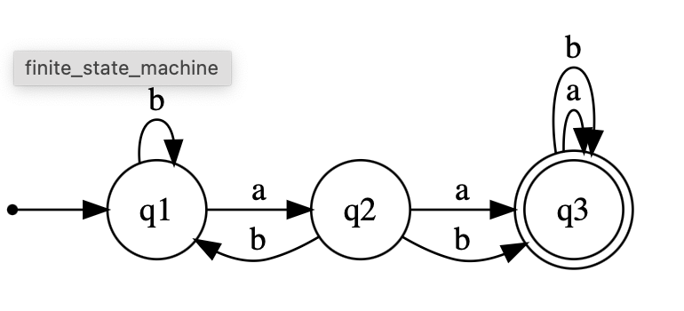

class: center, middle # Voortgezette Informatica --- # Agenda 1. Introduction 2. Deep-dive 3. ... --- # Introduction ```Python def f(x): return x ``` Droid Serif Yanone Kaffeesatz --- ###Leerdoelen Voortgezette Informatica 2024 Leerdoelen, na afloop van de cursus kan de student: 1. uitleggen wat er met de begrippen: computer , programma en algoritme bedoeld wordt met voorbeelden 2. beschrijven welk soort problemen met een eindige automaat kunnen worden opgelost 3. een deterministische eindige automaat kunnen omzetten naar een Python programma 4. een eindige automaat construeren bij een gegeven reguliere expressie en omgekeerd 5. voor een beschreven contextvrije taal een grammatica construeren 6. voor een contextvrije grammatica de bijbehorende stapelautomaat construeren 7. ontleedbomen voor een grammatica kunnen maken 8. fundamentele computermodellen zoals Turing machines beschrijven en de (on)mogelijkheden hiervan aangeven 9. voor een eenvoudige probleem een Turingmachine construeren 10. uitleggen wat met de universaliteit van Turing machines bedoeld wordt 11. aangeven welke soorten problemen wel of niet m.b.v. een rekenautomaat (computer) opgelost kunnen worden en minimaal 2 voorbeelden geven van niet berekenbare problemen --- ###Leerdoelen(vervolg) 12. het halting-probleem kunnen beschrijven 13. beschrijven wat de essentiële componenten van een moderne computerarchitectuur zijn en waar ze voor dienen aan de hand van een virtueel model computer met een eigen instructieset (jmvm) 14. aanduiden wat de rol van de stack en de heap in moderne computerarchitectuur is en dit met voorbeelden kunnen illustreren 15. eenvoudige python programma’s naar jmvm assembly kunnen omzetten 16. het verband kunnen aangeven tussen iteratie en recursie en een iteratie kunnen omzetten naar recursie --- ###Hier een plaatje  